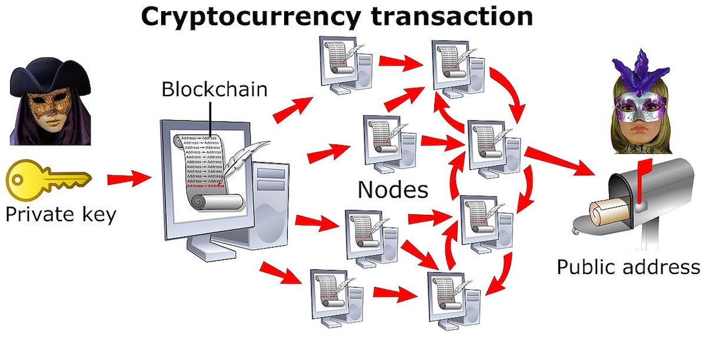

What's Cryptocurrency?
In society, money is viewed as a general idea: if people do not trust in the financial system then it will not work. Cryptocurrency
does not have a physical form but a virtual value instead. his peer to peer electronic cash system is a completely decentralized
and fluctuating network. Cryptocurrencies have exceedingly risen in popularity and have not only become a global phenomenon
but a political and economic one as well. Due to little to no regulation and decentralization of this up and coming financial system,
cryptocurrency has become a new stage for investment fraud.
In the past year, cryptocurrencies have changed the future of the financial system. Bitcoin
relies on a digital ledger called a blockchain in order to make all the transactions in the network
secure and public. However, the lack of regulation in the blockchain creates an insecure
environment for people. This is a prominent issue with value based networks. The lack of a
central system overseeing the network has increased the likelihood of scams and market
manipulation. Consider NiceHash, a third party Bitcoin mining marketplace, was recently hacked
due to cybercriminals gaining access to the system by using blockchain. As a result, NiceHash
lost more than 60 million dollars of crypto.

Cryptocurrency and Fraud: A Perfect Match
The cryptocurrency space is often criticized by an individual or group of people having
the ability to manipulate the market. The big players of the system can be referred to as ‘whales’
which use their crypto wealth to their advantage by changing the value of a coin. Recently, the
U.S. Commodity Futures Trading Commission joined along with other regulators announcing the
warning on the “pump and dump” crypto schemes. People should not be easily influenced on
their electronic currency purchases based on hints they receive through social media sites,
messaging boards, fake news reports or sudden increases in price. By being easily persuaded
through these false tactics, fraudsters are able to inflate share prices through rumors on the
internet and then dump the stock last minute once the share reaches a specific price point.
To combat the new problems that cryptocurrency has laid out for all parties involved,
centralization and regulation are much needed. A great start for this is to encourage
“whistleblowing”. In February, the Commodity Futures Trading Commission (CFTC), the U.S.
agency that regulates derivatives, released a statement about how they will provide a bounty to
people that come forward with information about illegal activities that can lead to enforcement
within the law. Another solution is self-regulatory organization (SRO). This solution was
developed by Cameron and Tyler Winklevoss, founders of Gemini. Their vision is to have a
non-profit, independent organization that is run by a board of directors that provides oversight to
virtual cash markets used for protecting consumers and keeping the integrity of the markets in
check. In Japan, they recently adopted the use of an SRO as result of theft that culminated into a
$500 million loss. Recently, the Securities and Exchange Commission has taken steps to regulate
this financial system. They issued a statement that raises their concerns about the unregulated
market of cryptocurrencies and how they will combat this in the future. In response, an hour after
the statement, the value of cryptocurrencies decreased by 10%.